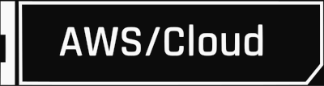
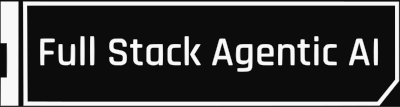

LANGUAGES



TECHNOLOGIES


CURRENTLY LEARNING

0110100001101001001000000111010001101000011001010111001001100101
B.S. in Computer Science
Graduating June 2027
GPA: 3.90






I'm Kareem, a software engineer and computer science student at UC San Diego, graduating in June 2027. My focus is distributed systems and infrastructure. I'm interested in how services communicate, how data is stored and retrieved, and how engineers keep those systems reliable in practice. I work with Go, Java, Python, and C++, with experience in cloud services, networking, and automation.
At LinkedIn, I built a Go control plane for web application firewall policies across a multi-CDN edge network. Cloudflare and Google Cloud each represent policies differently, so I worked on translating a shared policy language into provider-specific Terraform configurations and detecting configuration drift. I enjoy the challenge of giving engineers a consistent way to manage infrastructure while accounting for the differences between the systems underneath it.
At Amazon, I built a platform that let research scientists query scientific datasets in natural language. My work included Java backend APIs on AWS and a DynamoDB data model for conversation history and metadata. I designed the storage around its access patterns, using vertical partitioning and ULID-based sort keys to support efficient retrieval. The relationship between data modeling, latency, and cost is an area I'd like to keep working in.
My experience at Apple gave me another perspective on reliability. I worked on Python automation for AirPods validation, developed connectivity tests between AirPods and iPhones, and programmed robotic test systems. I also built a log-separation algorithm to make debugging easier. That work reinforced how much good engineering depends on being able to reproduce a failure and understand what happened.
I also build and release my own apps, including Pastry, a macOS clipboard manager, and SecureAI, an iOS app for monitoring data breaches. I enjoy being responsible for the whole application and carrying decisions about storage and application behavior through to a released product.
I also volunteer as a Java instructor with Coding4Kidz. Teaching gives me a different perspective on programming: I have to think carefully about how to explain something that has become familiar to me. You can find more of my work on the projects page. If you're working on distributed systems or infrastructure and would like to connect, I'd be glad to hear from you.